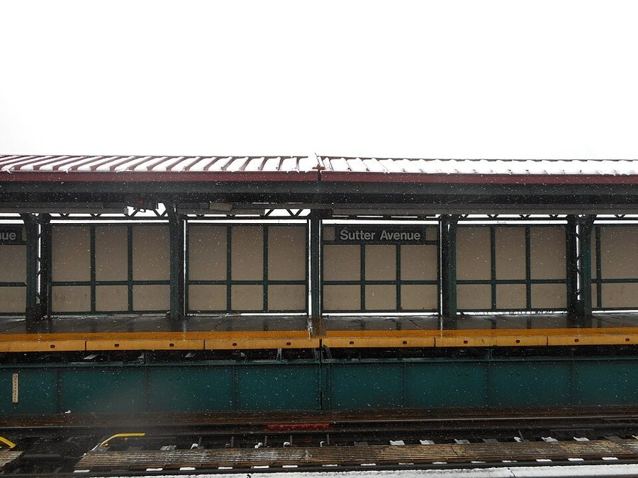
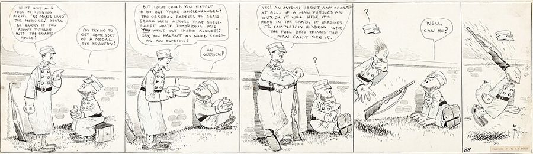
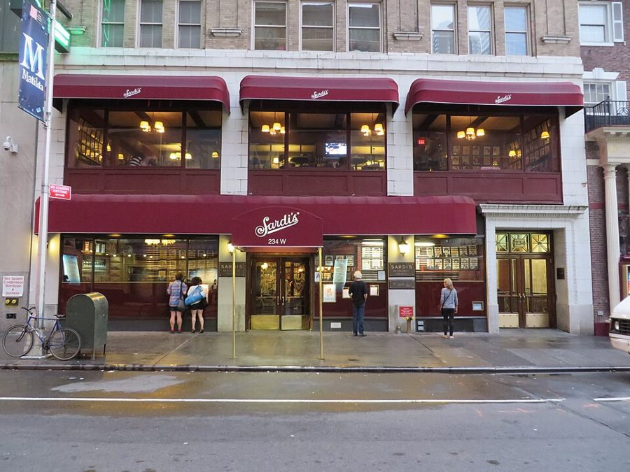
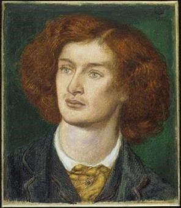

读之前
这一页是回忆录第一部分 The Maze of Time 的前三章。作者从写回忆录的当下说起，跳回 1945 年 4 月的一个早上：他十七岁，在纽约大学读医学预科一年级，坐地铁去上课。第 1 章是等车、坐车时的回忆和念头，第 2 章是同一天到了学校以后，第 3 章再往前跳到他十五岁时在百老汇的一个晚上。读的时候抓两条线：小说的哪些种子是在这里埋下的；他和父母、和他想挤进去的那个世界之间的距离。
读者从「开读之前」知道的作者：Daniel Keyes，1927 年生于纽约布鲁克林；在布鲁克林学院读心理学，1950 年毕业，1961 年又拿了英国文学硕士；1966 年起在俄亥俄大学教英文和创意写作，2014 年去世。中篇 1959 年发表，第二年得了雨果奖；长篇 1966 年出版。这本回忆录 2004 年出版，他写它时七十多岁。
读的时候带着这几个问题。不用先找答案，读完回来对照「检查一下理解」。
作者说要回到过去，找查理是从哪里来的。读的时候记下：这三章里有哪些东西后来进了小说？读完对照「对照小说」。§1 §5 §6
等车那一段，回忆里还套着更早的回忆。留意作者怎样从一枚硬币、一个地窖跳到更早的年月，又怎样回到站台上。§3–§5
作者的父母对他有什么期望？他自己想要什么？他怎样两头兼顾？§4
十五岁那个晚上，作者想要的到底是什么：看一出戏，还是别的？§8–§9
分节地图
这一页三章，原书在章内用空行分成 10 节。读完一节打个勾；每节下面的英文是那一节开头的几个词，在 Kindle 里搜它就能跳过去。没读的那几行先模糊着，免得提前看到内容，点一下就能看清。全页约 4600 词，一次读完。
第 1 章 My Writing Cellar约 300 词 I NEVER THOUGHT it would happen … 写回忆录时的作者。留意一个小毛病让他想起了谁，他决定做什么。 第 1 章（续）约 100 词 The opening of the story echoes … 小说的开头和结尾。留意他说故事「不是从这里开始的」。 第 1 章（续）约 600 词 One crisp April morning in 1945, … 1945 年的站台。留意一枚硬币让他想起了谁，和他说的「地窖」。 第 1 章（续）约 500 词 Remembering my childhood toy hiding place, … 还在等车，想起父母。留意他们对他的期望，和他自己的打算。 第 1 章（续）约 200 词 The crowded train pulled into the … 上了车。留意他在车上记下的两个念头。 第 2 章 The White Mouse约 1500 词 THE TRAIN PULLED INTO the Eighth … 同一天到了学校。留意同学说的征兵的事，和生物课上那只白老鼠。 第 3 章 Second Acting约 100 词 ALTHOUGH I’D ALWAYS WANTED to become … 想当哪一种作家。留意他先排除了什么。 第 3 章（续）约 400 词 In my teens, I glorified Manhattan. … 少年眼里的曼哈顿。留意 second acting 是怎么一回事。 第 3 章（续）约 700 词 That night started out the same … 1942 年的一个晚上。留意他每一步怎样装成买了票的人。 第 3 章（续）约 200 词 Twenty-five years later, in 1967, I … 跳到二十五年后。留意这一节怎样接回那个晚上。
背景：书里默认你知道的事
按在书里出现的顺序排，标题前是节号。作者和这些人之间的事，都是作者自己的说法。
§3 Brownsville 和五分钱的地铁Brownsville 在布鲁克林东部，二十世纪上半叶是东欧犹太移民聚居的工人区。作者上车的 Sutter Avenue 站在它和 East New York 交界的地方，1906 年启用，是架在街道上方的高架站，今天的 L 线还停这里。这条线往西穿过东河底下的隧道，到曼哈顿 14 街的 Union Square；作者在那里换慢车（local）往南坐到 8 街，走几步就是 Washington Square 边上的纽约大学。纽约地铁 1904 年开通时车费五分钱（a nickel），一直到 1948 年 7 月才涨到一角。

Sutter Avenue 站开往曼哈顿方向的站台，2017 年 3 月拍。车站后来翻修过，样子和作者 1945 年等车时不一定一样。DanTD，CC BY-SA 4.0，维基共享资源
曼哈顿
布鲁克林
东河
Brownsville
Sutter Avenue 站
Union Square（14 街）
8 街站
纽约大学
地铁，河底隧道
换慢车
父亲步行，过 Manhattan Bridge
本站示意图，不按比例。实线是作者 1945 年上学的路，书里说到 Union Square 要站半个小时；虚线是父亲大萧条时为省车费走的路，作者说单程约十英里，父亲具体走到哪里，书里没说。 §4 1927 年和爵士时代作者生在 1927 年，他举了这一年的两件事：5 月 Charles Lindbergh 独自驾机从纽约不着陆飞到巴黎；10 月上映的 The Jazz Singer（《爵士歌手》），Al Jolson 主演，是第一部带同步对白和唱段的长故事片，书里叫它「第一部有声电影」。1920 年代后来被叫作爵士时代（Jazz Age），这个名字因 F. Scott Fitzgerald 流行开。1920 到 1933 年美国禁酒，喝酒要去地下酒吧（speakeasy）。母亲爱唱的 Smoke Gets in Your Eyes 是 1933 年的歌，那时 1929 年的股灾已经把爵士时代收了场，大萧条正重。
§4 学过医的作家作者举的三个人。Somerset Maugham（1874–1965）在伦敦 St Thomas’s 医院学医，1897 年取得行医资格，同年出了第一部小说，之后专门写作。契诃夫（Anton Chekhov，1860–1904）在莫斯科大学读医科，学生时代就用几十个笔名在幽默杂志上发小品，「没有病人的医生」是其中一个；他后来也一直断断续续给人看病。Arthur Conan Doyle（1859–1930）1891 年在伦敦开眼科诊所，据他自己回忆，一个病人也没等来，就在诊所里写福尔摩斯。「三个人当医生都失败了」是作者的说法。
§6 Mutt and JeffBud Fisher 从 1907 年起在报纸上画的连环漫画，主角是瘦高的 Mutt 和矮小的 Jeff，后来在全美的报纸上连载了几十年。一高一矮两个人走在一起，美国人就叫他们 Mutt and Jeff。作者说自己五英尺五（约 165 厘米），同学 Stretch 六英尺多（一米八以上）。

一战时期的一条 Mutt and Jeff，1917 年 12 月，两人都穿着军装：高的是 Mutt，矮的是 Jeff。Bud Fisher，公有领域，维基共享资源 §6 1945 年春天的征兵和商船队1945 年春天，欧洲的仗快打完了（德国 5 月 8 日投降），对日作战还在打。美国从 1942 年底起征召年满 18 岁的男子。Stretch 说，在满 18 岁前三个月以上主动报名，可以自己挑海军之类的军种，等到被征就多半进步兵。另一条路是商船队（Merchant Marine）：民间的货轮和船员，给前线运兵、运物资，不算军队，船员由 U.S. Maritime Service 训练。摩尔曼斯克航线（Murmansk run）是盟国船队绕过挪威北边给苏联送物资的航线，常遭德国潜艇和飞机袭击，是最危险的航线之一。
§6 Sea Scouts 和「飞翔的荷兰人」Sea Scouts 是美国童子军（Boy Scouts of America）给大一点的孩子办的海上项目，学驾船、航海和急救。作者那条船用「飞翔的荷兰人」（Flying Dutchman）命名：欧洲水手传说里一艘永远靠不了岸的幽灵船，在好望角一带的风暴里出没，看见它不吉利。传说有好几个版本，Wagner 1843 年首演的歌剧《漂泊的荷兰人》用的是作者提到的那一种：船长要找到一个肯为他牺牲一切、至死忠诚的女人，诅咒才能解除。
§8 百老汇：Lindy’s 和 Sardi’s百老汇（Broadway）在这里指 Times Square 一带的剧院区。Lindy’s 是 1921 年开在百老汇大街上的餐馆，以奶酪蛋糕出名，演员、赌徒、记者都爱去。Sardi’s 在西 44 街，1927 年搬到今天的位置，墙上挂满百老汇明星的漫画像。作者想象中剧作家的首演之夜，就是在这里开香槟、等第二天报纸的剧评。剧场进门时发给观众的节目册叫 Playbill。
Damon Runyon（1880–1946） 美国记者、小说家 专写百老汇一带的赌徒、骗子和歌舞女郎，满纸自造的俚语。他在小说里把 Lindy’s 写成 Mindy’s。音乐剧 Guys and Dolls（1950）就是根据他的小说改的。

西 44 街 234 号的 Sardi’s，2014 年拍。Leonard J. DeFrancisci，CC BY-SA 3.0，维基共享资源 §8 Thornton Wilder 的两出戏
Thornton Wilder（1897–1975） 美国剧作家、小说家 三次得普利策奖。Our Town（《我们的小镇》，1938）写新罕布什尔一个小镇上的平常日子，几乎不用布景，是美国中学常读的剧本。
The Skin of Our Teeth（《九死一生》）1942 年 11 月 18 日在百老汇的 Plymouth 剧院首演，Elia Kazan 导演，Fredric March 和 Tallulah Bankhead 主演，第二年得了普利策戏剧奖。戏里一家人一次又一次从冰川、洪水、战争里逃出来。剧名来自英语习语 by the skin of one’s teeth（险险地、侥幸地），出自《圣经·约伯记》。
词与短语
两类：黄边的「每个字都认识」是熟词生义、习语、行话和话里的弦外之音；其余是这里用法特别的词。斜体小字是原句里的几个词，在 Kindle 里搜它就能找到原文。
§1 第 1 章
20/400 vision
… very nearsighted—20/400 vision, everything blurred …
视力 20/400，极度近视
美国用分数记视力：正常人在 400 英尺外看得清的东西，他要走到 20 英尺才看清，约合小数记法的 0.05。
a place for everything and everything in its place
… a place for everything and everything …
东西各有各的位置，用完放回原处
英语里讲整洁的老话。他小时候怕瞎，就这样练着在黑暗里找东西。
put one’s hands on
… still put my hands on most …
（需要时）找得到、拿得到
不是「把手放在上面」。can’t put my hands on it 就是「一时找不着」。
click into place
Then it quickly clicks into place.
一下子想起来，对上了
像零件「咔」一声卡进槽里。前面几句是走进房间忘了要拿什么，这一句是很快又想起来。
haunt
Charlie is haunting me, and I’ve …
（像鬼魂一样）缠着
haunted house 是闹鬼的房子。接下来一段的 put him to rest、exorcise the ghosts 都顺着这个「鬼」的比方说。
put someone to rest
… I can put him to rest …
让（亡魂）安息；了结这件心事
lay a ghost to rest 是让鬼魂不再出来作祟。查理是他自己写出来的人物，他说得像是要给查理办一场安魂。
the maze of time
… back through the maze of time, …
时间的迷宫
回忆录第一部分的名字就叫 The Maze of Time。maze 也是小说里 Algernon 和查理比着走的迷宫。
exorcise the ghosts of memories past
… exorcise the ghosts of memories past.
把往事的幽灵驱走
exorcise 是驱魔。名词后面跟 past 的词序是故意的，读着像狄更斯《圣诞颂歌》里的 the Ghost of Christmas Past（「过去的圣诞之灵」）。
make it up
… don’t have to make it up—just …
（凭空）编出来
make up 在这里是虚构、捏造。他对自己说：材料都在，不用编，只要回想、整理。
§2 第 1 章（续）
novelette
Although the original novelette begins with …
中篇小说
比短篇长、比长篇短的小说。这里指 1959 年的中篇 Flowers for Algernon。
spark
… the ideas that sparked the story …
引发，点燃
spark 本是火星，作动词是「点着」：故事是被那天的两个念头点着的。
§3 第 1 章（续）
elevated platform
… to the elevated platform of the …
高架站台
纽约地铁出了曼哈顿，很多段架在街道上空，叫 elevated（口语 the el）。见「背景」。
the local
… I would change for the local …
（站站都停的）慢车
纽约地铁分 express（快车，只停大站）和 local。local 在这里是名词，指慢车，不是「本地」。
nickel
As I took the nickel fare …
五分钱的硬币
美国五分硬币的俗称，因为是镍合金的。那时坐一次地铁正好一枚。
roll
… dipping a roll into his coffee.
小圆面包
不是「卷」的动作，是一种小面包。泡在咖啡里吃，就是父亲的早饭。
stare into space
Watching him stare into space, I …
两眼发直，出神
space 在这里是空处，不是太空。他当时以为父亲什么也没想。
retrace someone’s footsteps
… perhaps I’d retrace his footsteps, walking …
沿着某人走过的路再走一遍
retrace 是重新描一遍。他想自己走一趟，体会父亲当年的滋味。
root cellar
… in the root cellar of my mind, …
储菜的地窖
存土豆、萝卜这类根茎菜过冬的地窖，原文是斜体。第 1 章章名 My Writing Cellar 就是这个比方：素材在黑暗里存着，等写故事时取用。
lumber room
… as a lumber room, to which …
堆放木料、杂物的储藏间
lumber 在美国是木料，在英国还指不用的旧家具杂物。Faulkner 1950 年代末在弗吉尼亚大学的讲座里打过这个比方：作家像木匠，到储藏间里找一块合用的木板。
odds and ends
… needed odds and ends for the fiction …
零七八碎的东西
固定说法，和 bits and pieces 差不多。
coal bin
… near the coal bin, in the …
煤仓
那时纽约很多楼房烧煤取暖，地下室里有锅炉（furnace）和堆煤的隔间，运煤车把溜槽从地下室窗口伸进来卸煤。
Tinkertoy, Erector set
… and Tinkertoy, and Erector set, and …
两种拼装玩具
Tinkertoy 是木棍插进带孔的木轮里搭东西；Erector set 是带孔的金属条加小螺丝，能拼出桥和起重机。都是 1910 年代就有的美国玩具。
stoke … with a poker
… and stokes it with a poker.
用拨火棍捅旺炉火
poker 在这里是铁制的拨火棍，不是扑克。stoke 是给炉子添煤、拨火，让它烧旺。
§4 第 1 章（续）
talking movie
… in the first talking movie.
有声电影
口语常说 talkie。书里说 The Jazz Singer 是第一部，准确些说是第一部带同步对白和唱段的长故事片。见「背景」。
the Jazz Age
… later became known as the Jazz Age, …
爵士时代
指 1920 年代，从一战结束到 1929 年股灾。前面的 years of hope and excess（希望和放纵的年代）就是在说它。
speakeasy
… the Charleston at speakeasies where they …
（禁酒令时期的）地下酒吧
字面是「说话小声点」：进门要压低嗓子报暗号。Charleston 是那时流行的一种快步舞。
bobbed hair
… with her bobbed hair and sad …
齐耳短发
bob 作动词是剪短。1920 年代剪短发的年轻女子是新潮的象征。
formal schooling
… had little formal schooling, it …
正规的学校教育
formal 在这里是「正式、成体系的」，和自学、在社会上学的相对，不是「正装的」。
drift away
… them—drifting away into my world of …
慢慢漂远，疏远
drift 是随水漂。没有谁推开谁，是一点点漂开的。
infected mastoid
… you had an infected mastoid and …
乳突感染
乳突是耳朵后面那块骨头，中耳炎蔓延过去会化脓。double pneumonia 是两侧肺都发炎。青霉素 1940 年代才普遍用上，在那之前这两样都可能要命。
premed
I declared premed as my major.
医学预科
美国的医学院要先读完本科才能考，本科读生物、化学这些先修课，叫 premed。declare a major 是正式选定主修。
cross over into
… then crossed over into the writing life.
转行进入
cross over 本是越过界线，这里是从行医那一边跨到写作这一边。
§5 第 1 章（续）
crush
… through the crush of work-bound commuters …
挤成一团的人群
crush 作名词在这里是拥挤，不是 m6 里那个「暗恋」。work-bound 是正赶去上班的。
drive a wedge between
… is driving a wedge between me …
在……之间打进楔子：使疏远
wedge 是劈木头用的楔子，一下下敲进去，缝越来越大。常用来说离间、制造隔阂。
What would happen if …?
What would happen if it were possible …
要是……，会怎样？
下一段他把它叫作讲故事的人的句式：很多小说就是从一个「要是」开始的。
happen
Later that day, the white mouse happened.
（白老鼠这件事）来了
happen 的主语一般是「事情」。把白老鼠当主语，就是把它说成一件事。这一句也是下一章的预告。
§6 第 2 章
Mutt and Jeff
… called us “Mutt and Jeff” like …
一高一矮的一对
一部老连环漫画里的两个人物，见「背景」。
Stretch
I called him “Stretch.”
（外号）大高个
stretch 是拉长、伸展。给高个子起这个外号很常见，就像叫胖子 Tiny。
dunk
I was dunking my doughnut when …
（把面包、甜甜圈）蘸进饮料里
美国人吃甜甜圈常蘸咖啡。篮球的扣篮也叫 dunk。
exempt from finals
… you get exempt from finals.
期末考试可以免考
exempt 是「免除（义务）」，后面 exempt you from the draft 是免服兵役。finals 是期末考试，不是决赛。
anyone who breathes
They’ll take anyone who breathes.
只要还有口气，他们就收
夸张的说法：征兵不挑人，近视也躲不掉。
liberty boat
… an old liberty boat converted into …
（送水兵上岸休假的）交通艇
liberty 在海军里是短期上岸假。别和二战时大批造的货轮 Liberty ship（自由轮）弄混。
prime
… we scraped and primed and painted …
上底漆
刮掉旧漆、上底漆、刷面漆，是保养船壳的三步。prime 常见的意思是「首要的」，这里是动词。
sworn in
… new sea scouts were sworn in, …
宣誓入会，宣誓就职
swear in 是让人宣誓接受某个身份。总统就职也用它。
cruise for girls
… when we cruised for girls in …
四处转悠找女孩搭讪
cruise 本是乘船巡游，口语里是开车或闲逛着找人搭讪。他们穿着水手服，这个双关正好。
Victory Girls
… then called “Victory Girls,” young women …
「胜利女孩」
二战时美国对爱和军人约会的年轻女子的叫法，也叫 V-Girls，常带贬义。作者用 then called 标明这是当时的说法。
sub-mariners
… we explained that we were sub-mariners, …
潜艇兵（双关：矮一截的水手）
submariner 是潜艇兵；拆开写，sub- 又是「低于」。女孩嫌他们个子矮，他们就说自己是在水下的兵。
Battle Squadron A
… we told them, “Battle Squadron A.”
「A 战斗中队」（编的）
领口下面的 B.S.A. 其实是 Boy Scouts of America（美国童子军），他们给它另编了一个听上去像海军的全称。
Merchant Marine
… and Merchant Marine duty would exempt …
商船队
一国的民用商船和船员的总称，不是海军陆战队（Marine Corps）。见「背景」。
the Murmansk run
… killed on the Murmansk run than …
摩尔曼斯克航线
run 在这里是固定的航线、班次。商船船员比海军死得多，是 Stretch 说他「在哪里读到的」，见「背景」。
sign the papers
My folks would never sign the papers.
在文件上签字同意
他还不满 18 岁，报名要父母签字。folks 是口语的「爸妈、家里人」。
dissection kit
… a rolled-up dissection kit and …
（卷成一卷的）解剖工具包
布包里插着手术刀（scalpel）、镊子（forceps）、剪刀和探针，用时摊开。
spring something on someone
… enjoyed springing this as a surprise …
突然抛给某人，打个措手不及
spring 是弹出来。spring a surprise on 是常见搭配。
harden oneself
I had hardened myself.
让自己硬起心肠
练到见血不慌。用过去完成时，说的是在这之前早已练成。
sandwich man
… jobs as a sandwich man in …
（小餐馆里）做三明治的伙计
sandwich man 更常指身前身后挂着广告牌在街上走的人，像夹在两片面包中间。这里后面跟着 in a luncheonette（卖简餐的小饭馆），是做三明治的。
drafted into
… I was drafted into being ship’s …
被抓差去当
draft 是征兵。这一章大家都在谈征兵，他在船上被「征」去当厨子，是个玩笑。
in lieu of
… cigarettes in lieu of cigars.
代替
lieu 是法语的「地方」，in lieu of 就是 instead of，书面一点。美国旧俗，家里添了孩子，男人给朋友发雪茄。
§7 第 3 章
The Day of the Locust
… Nathanael West’s horror story of Hollywood—The …
《蝗虫之日》
Nathanael West 1939 年的小说，写好莱坞边上那些想出名、没出成名的人，结尾是一场暴乱。作者说读了它就不想当编剧了。
rule out
… I ruled out screenwriting.
排除
rule 在这里是「裁定」，不是尺子。下一段开头 That left 就是「剩下的就是」。
Thy days are numbered
“Thy days are numbered, Montezuma.”
你的日子不多了
thy 是古英语的 your。说法出自《圣经·但以理书》墙上的字：神已经数算了你国的年日。Montezuma 是被西班牙人征服时的阿兹特克皇帝。
§8 第 3 章（续）
Baghdad-on-the-Hudson
It was Baghdad-on-the-Hudson, city of …
哈德逊河上的巴格达：纽约
把纽约比作《一千零一夜》里五光十色的巴格达。O. Henry 在小说里叫它 Bagdad-on-the-Subway，后来的人改成了这个说法。小说里查理搬进 Times Square 旁的旅馆时，也这样叫纽约（报告 14，6 月 15 日）。
mecca
… reach that mecca for a nickel, …
（一行人向往的）圣地
本是伊斯兰教的圣城麦加，小写用作普通名词，指某类人都想去的中心。
second-act warning
… announced the second-act warning, I …
第二幕快开场的提示铃
幕间休息快结束时，剧场打铃（buzzer）催观众回座。前面的 first-act curtain 是第一幕落幕。
second acting
I called it second acting.
「看第二幕」：混进剧场白看后半场
把 second act（第二幕）当动词用。作者说这是他给它起的名字。
guys and dolls
… and gangsters, guys and dolls hanging …
小伙子和姑娘们
doll 是 Runyon 小说里对女人的俚语叫法，现在听着轻佻。Guys and Dolls 也是根据他的小说改的音乐剧的名字。
the task at hand
… focused on the task at hand.
眼下要办的事
at hand 是「在手边、眼前」。
curtain call
Curtain calls on opening night of …
谢幕
落幕后观众鼓掌，演员一次次回到台前鞠躬。opening night 是首演之夜。
Author! Author!
Shouts of “Author! Author!” Bows and …
「作者！作者！」
首演大获成功时，观众喊编剧上台受掌声。
the early Times review
… waited for the early Times review.
《纽约时报》早版上的剧评
Times 指《纽约时报》，early 是第二天报纸最早印出来的那一版。首演当晚，大家等的就是这一版上的剧评。
§9 第 3 章（续）
Playbill
I found a Playbill, slipped it …
（百老汇的）节目册
进剧场时发给观众的节目册的刊名，里面有演员表和剧情介绍，见「背景」。
backtrack
… had to backtrack to the other …
原路退回去
back 加 track（路），沿来路往回走；也常比喻说过的话往回收。
ticket stub
“May I see your ticket stub?
票根
进门时撕掉一半，留在观众手里的那一截。usher 是引座员。
marquee
… look back at the marquee at …
（剧院门口的）招牌顶棚
剧院、电影院正门上方伸出来的檐篷，四周装灯，写着剧名和演员名。
close call
… now mocked my close call.
险些出事，好险
close 读 /kloʊs/，是「近」：差一点就出事。剧名 The Skin of Our Teeth 也是「险险逃过」的意思，这一句把两者连在了一起。
badge
… held it as a badge that …
（表明身份的）徽章
badge 是警徽、胸牌这类亮出来证明「我是这里的人」的东西。他拿节目单当这个用。
by the skin of one’s teeth
… the skin of his teeth—as he …
险险地，侥幸地
字面是「靠牙齿上的那层皮」，出自《约伯记》，形容差一丝一毫。剧名就是这个说法，见「背景」。
§10 第 3 章（续）
fellowship
… I received a fellowship to the …
（给作家、学者的）资助名额
常见意思是友谊、团契。这里是一份资助：去某处驻留、专心工作一段时间。
MacDowell Colony
… the MacDowell Colony for Creative Artists …
麦克道尔艺术村
1907 年作曲家 Edward MacDowell 和妻子 Marian 在新罕布什尔州 Peterborough 创办，让作家、作曲家、画家住进树林里各自的工作室。colony 在这里是聚居地，不是殖民地。
对照小说
作者在这三章里讲到了小说好几处的来头。一张卡片一件事：回忆录里怎么说，小说里落在哪一页；点链接回到那一页。右上角是回忆录这一页的节号。
想不起要拿什么 作者说，他走进另一个房间一时想不起要拿什么，就想起小说结尾查理的一句话。他凭记忆引的拼写全对，前面还多了 I remember；小说里这句在查理最后一篇报告里，拼法已经退回开头的样子：I did somthing but I dont remembir what，说的是他为科学做过一件事。
报告 17 · 11 月 21 日 §1 开头那几句 作者引的开头是 1959 年中篇的原文（shud rite、if they will use me）。长篇的第一篇改过：查理多写了要 re-membir，说自己 32 岁，在 Donner 的面包店干活。他引的结尾，请人在后院 Algernon 的坟上放花，长篇和中篇都有。
报告 1 · 3 月 3 日 §2 父母的期望 作者在这几章里没拿父母和小说比，本站只把一处放在旁边。他的父母没上过多少学，要他出类拔萃、当医生；查理的母亲 Rose 一心要儿子变正常、变聪明。查理在 6 月 10 日说，他想变聪明的那股劲就是从她那里来的。
报告 13 · 6 月 10 日（续） §4 楔子 十七岁的作者在地铁上想：教育正在他和他爱的人之间打进楔子。这个说法几乎原样给了查理：5 月 20 日，离开面包店以后，查理写下的正是 wedge 这个词，说聪明隔开了他和他认识、他爱的人。另一个念头「能提高人的智力会怎样」，就是整部小说的出发点。
报告 11 · 5 月 20 日 §5 侧躺着的白老鼠 同一天下午，生物课上，作者揭开托盘，是一只侧躺着的死白老鼠。小说里 Algernon 死时也侧躺在笼子角落；解剖证实了查理的预测，查理把它带回家，埋在后院，放上野花。当晚作者在选集目录里看到 Algernon Charles Swinburne，觉得这个名字少见。
报告 16 · 9 月 17 日 §6 挤进人群里 没看成戏，作者又混进散场的人群，把节目单拿在手里当徽章，好像这样就成了他们中的一个。查理也有这样的晚上：他在 Times Square 一家家电影院进进出出，忽然明白自己要的不是电影，是黑暗里身边的观众。
报告 14 · 6 月 24 日 §9 
Algernon Charles Swinburne（1837–1909），英国诗人，诗风华丽大胆，在维多利亚时代常惹争议。这是 Dante Gabriel Rossetti 1862 年给他画的像，他那年二十五岁。Dante Gabriel Rossetti，公有领域，维基共享资源
这一页在几个年份之间跳
读的顺序：2004 → 1945 → 1930 年代 → 1927 → 1945 → 1942 → 1967
1930 年代 大萧条 §3
1927 出生 §4
1942 十五岁 §8–§9
1945 年 4 月 十七岁 §3–§6
1959 中篇
1966 长篇
1967 MacDowell §10
2004 写回忆录 §1–§2
本站示意图，按书里给的年份画。第 1 章从写回忆录的时候起笔，跳回 1945 年的站台，在站台上又想起大萧条时的父亲和更早的父母；第 2 章接着 1945 年那一天；第 3 章往回跳到 1942 年，最后一节一下跳到 1967 年。 值得停下来的句子
the more I read and learned, the less I could communicate with them. I was losing them— §4，第 1 章，作者说少年时和父母的距离。本站译：我读得越多、学得越多，就越没法和他们说上话。我在失去他们。
前一句刚说完：父母没受过多少正规教育，却尊重教育，要他在学校出类拔萃。他们要的东西，正是把他带走的东西。这里还只是一种感觉，过一节，在拥挤的车厢里，它被压成了一句话：教育在我和我爱的人之间打进楔子。二十年后的长篇里，这句话到了查理笔下。这句后面紧跟着 drifting away：没有谁推开谁，是一点点漂远的。
Once again, I merged into the crowd, as if by being among them I could be part of them.— §9，第 3 章，戏没看成，散场时的剧院区。本站译：我又一次混进人群，好像只要在他们中间，就能成为他们中的一个。
Once again 指回同一节开头：中场时他混在抽烟的观众里。整晚他都在扮演一个属于那里的人：深蓝西装、仿金烟盒、手里的节目单。as if 说破了这件事，他自己也知道只是「好像」。十五岁的他想要的大概不只是一出戏。这一晚的结尾，他在回布鲁克林的地铁上自己编了一个故事，讲的就是这一晚。
读完想一想
1. 作者的父母尊重教育，要他出人头地；可正是读书让他和父母越来越说不上话（§4–§5）。这是谁的错吗？有没有办法既往上走、又不和家里人漂远？你自己或身边有没有类似的经历？
本站的看法 本站的看法：书里看不出谁做错了什么。父母要他读书是爱他，他漂远也不是嫌弃他们，作者写到父亲时满是事后才懂的体谅：当年以为父亲发呆，后来才知道是在愁钱、在为失业羞愧。距离多半来自两个世界说的话不一样了。小说把这一点推到了头：查理的智力在几个月里翻了几倍，楔子也就敲得又快又深。现实里的距离慢得多，也更有机会补回来，但要有人肯去补。
2. 解剖课上，那只白老鼠让作者冲出了实验室（§6）。他回来用一句玩笑把场面圆了过去，拿了 A。这件事放在小说旁边读，你会想到小说里哪些人、哪些场面？
本站的看法 本站的看法：作者在这一章没有说这件事和小说有什么关系，读者可以自己连。小说里也有两种看老鼠的眼光：实验室把 Algernon 当成一个样本，查理却把它当成同伴，死后不肯让人扔进焚化炉，自己埋了它。十七岁的作者在那一刻像是同时站在两边：他是要当外科医生的学生，被教着把老鼠当标本；可他看见的是几条没出生就没了的小命。他用玩笑把自己拉回了第一种眼光。
3. second acting 只看后两幕，开头要自己补（§8）；作者说回忆录也不是从小说的第一句开始的（§2）。只看到中间、自己去补开头，和写小说、和查理在长篇里一点点拼回自己的童年，有没有相像的地方？
本站的看法 本站的看法：这是本站的读法，作者没有这样说过。少年的他在剧场外听人聊第一幕，捡线索，在脑子里搭一个开头；那晚连第二幕也没看上，他就把整出戏编了出来。长篇里的查理也像一个从中间进场的人：手术后他才开始一段段想起小时候，靠零碎的画面去补自己的「第一幕」，补出来的未必都准。读回忆录也一样：作者七十多岁时回头补十七岁那天的开头，他自己在第一句就承认，记忆开始靠不住了。
对照今天
成立 后来的事实印证了这个说法部分成立 一部分对，一部分被后来的事改了被改写 后来的事实推翻了它，或者完全变了样书里的说法：教育可能在人和人之间打进楔子（作者 1945 年在地铁上的念头，§5）
书里 作者先想到的是自己：教育正在他和他爱的人之间打进楔子；记下来时成了一句更普遍的话：教育可能在人和人之间打进楔子。他的父母没受过多少正规教育，他是家里读大学的人。
当时 1940 年的美国人口普查里，25 岁以上的人读完四年大学的只有 4.6%。像作者这样父母没上过大学、自己挤进大学的人不多，这种处境当时还没有专门的说法。
今天 社会学和心理学把这类学生叫「第一代大学生」。社会学家 Howard London 1989 年访谈这些学生和家人，写的就是对家里的忠诚和往上走之间的拉扯。心理学家 Covarrubias 和 Fryberg 2015 年把其中一种感受叫「家庭成就内疚」：自己得到的教育机会比家里人多，就觉得愧疚，回家时会少说自己的成绩；同年另一项研究发现这种内疚越重，抑郁症状越多。研究也在试减轻它的办法，说明距离会有，但不是注定的。作者说的是 could（可能），这个限定站得住。核对于 2026-10。依据：美国人口普查局 1940 年普查对比资料；London 1989，《美国教育杂志》；Covarrubias、Fryberg 2015，《文化多样性与少数族裔心理学》；Covarrubias 等 2015，《儿童与家庭研究杂志》。
检查一下理解
先在心里答，再点开。答错的那题，回书里把对应那一节再读一遍。
1.（§1）什么小事让作者想起了查理？他打算怎么办？ 他走进另一个房间，一时想不起要拿什么，很快又想起来。这让他想起小说结尾查理忘事的那句话。他觉得查理在缠着他，决定沿着时间往回走，找查理的来源，好让查理「安息」，也想弄明白自己是怎样成了作家的。
2.（§3）手里的五分钱让作者想起了什么？ 父亲在大萧条时失业，每天从家里走十英里进曼哈顿再走回来，好省下两枚五分钱的车费。早上父亲照样出门，作者以为他去上班，很久以后才知道他是为失业羞愧。
3.（§4）父母为什么要他当医生？他自己是怎么打算的？ 父亲说医生像上帝，救人性命；母亲说他婴儿时得过乳突感染和双侧肺炎，是一位好医生救了他。他报了医学预科，把当作家的梦埋起来，又暗想学毛姆、契诃夫、柯南·道尔，先当医生再写作；转念发现那三个人都是当医生不成功才成了作家。
4.（§6）生物课上作者为什么跑出实验室？回来以后说了什么？ 他剖开的母鼠怀着孕，子宫里蜷着一串小胎鼠。他觉得为了让学生动手练习，几条小命就这么没了，一时下不去手，冲去洗手间。回来后他开玩笑说自己当了一窝的「教父」，按规矩该发雪茄，就发香烟吧。
5.（§9）那晚第二幕为什么没混成？ 那晚满座，比平时人多，楼下没有空位。他上楼座坐了别人丈夫的位子，被赶起来；引座员要看票根，他说丢了，下楼时踩空摔了一跤。到了大厅，他才看见海报上被人群挡住的横幅：今晚票已售罄。
6.（§10）1967 年在 MacDowell 的工作室里，作者看见了什么，做了什么？ 壁炉台上有一块船桨形的木板，刻着以前在这里工作过的人的名字，其中有 Thornton Wilder，作者说他 1936 或 1937 年就在这间工作室写 Our Town。作者想起那个没看成戏的晚上，把自己的名字添在了最下面。
用一句话说这一页：
精彩回顾
隔几周回来，先看这几张卡片。想不起来的那张，点节号回到这一页，再回书里那一节。
一句话： 作者从老来的一次健忘说起，回到十七岁那个早上：地铁上的两个念头、生物课上的白老鼠，后来都成了小说的种子。
蒙着眼找东西 小时候近视得厉害，以为总有一天会瞎，就蒙上眼练习在黑暗里找东西。眼睛没瞎；老了以后，倒是走进房间会忘了要拿什么。
§1 两枚五分钱 大萧条时父亲失业，每天走十英里进城再走回来，省下两枚五分钱的车费，早上照样出门，好像去上班。
§3 地铁上的两个念头 十七岁，挤在车厢里：教育在我和我爱的人之间打进楔子；要是能提高一个人的智力，会怎样？
§5 一窝的教父 解剖的白老鼠怀着孕，作者冲出实验室，回来说自己当了教父，发香烟代替雪茄。当晚他在诗选目录里看到 Algernon 这个名字。
§6 节目单当徽章 十五岁混进剧场看第二幕，那晚客满，被引座员盯上，摔下台阶。出来后他攥着节目单跟人走进 Sardi’s，只为问厕所在哪。
§9 木桨上的名字 二十五年后在 MacDowell，壁炉台上的木桨刻着 Thornton Wilder 的名字。作者把自己的名字添在了最下面。
§10